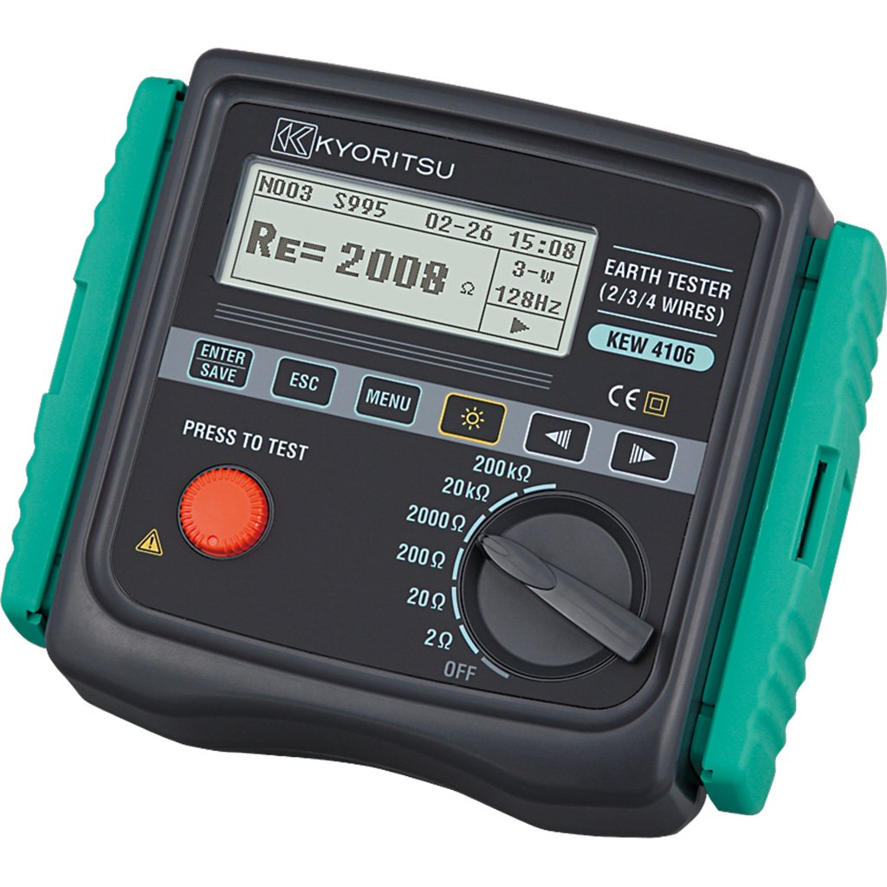

BÚSQUEDA DE FALLAS
Ensayos y Mediciones
Aplicables a diversas instalaciones
En Metrelex realizamos los ensayos y mediciones necesarios con equipos de calidad para garantizar una medición confiable y segura.
PRUEBAS Y ENSAYOS
- Resistencia de puesta a tierra método caída de potencial
- Resistencia de puesta a tierra método 2 puntos
- Resistencia de puesta a tierra mediante pinza de inducción
- Medición de resistividad de terreno
- Simulaciónes de tensiones de paso y contacto
- Informes de diseño y medicion de puestas a tierra.
NUESTROS EQUIPOS

MODELO KYORITSU 4106
- Medidor de terreno por el método de los 4 polos
- Medidor de mallas a tierras por el método de la caída de tensión de los 4 polos
- Rangos de medición de 2, 20, 200, 2,000, 20,000 y 200,000 [Ω]
- Alta resolución desde los 0.001 [Ω] en escala de 2 [Ω]
- Permite restar la resistencia residual en los cables de prueba
MODELO KYORITSU 4300
- Medidor de mallas a tierras por el método de la caída de tensión de los 2 polos
- Rangos de medición de 200, 2,000 [Ω]
- Medidor de tensión AC/DC [True RMS]
MODELO FLUKE 1630
- Medidor de la resistencia de lazo de tierra
- Rangos de medición de 0.025 [Ω] hasta 1500.0 [Ω]
- Medidor de la corriente de fuga de tierra
- Rangos de medición de 0.2 [mA] hasta 35 [A]
- Amplia apertura de la mordaza de 35 mm